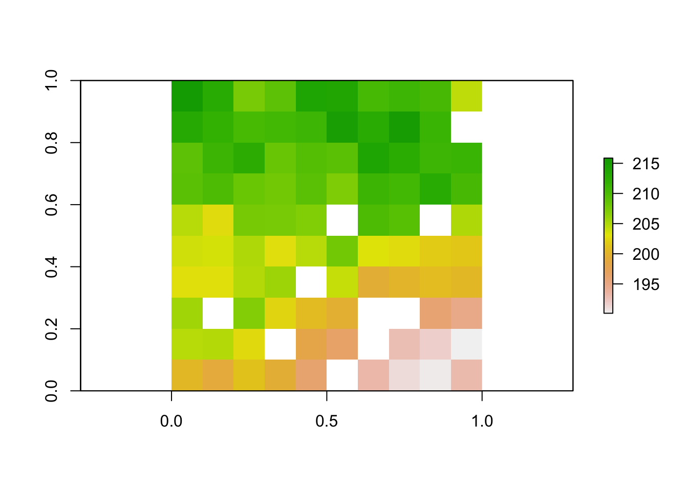
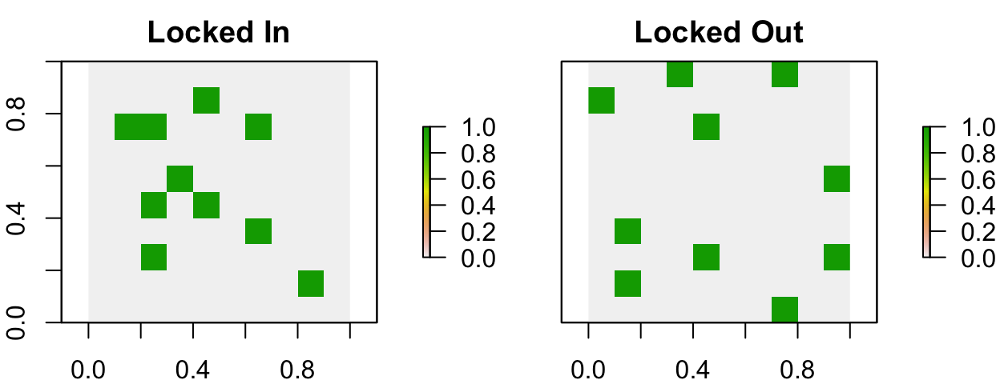
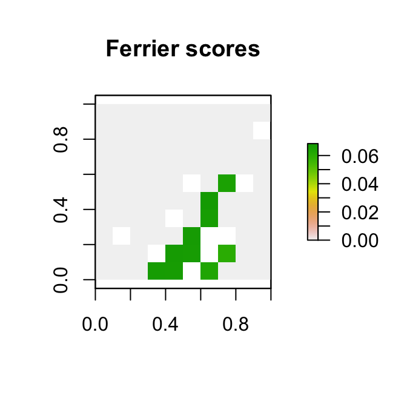
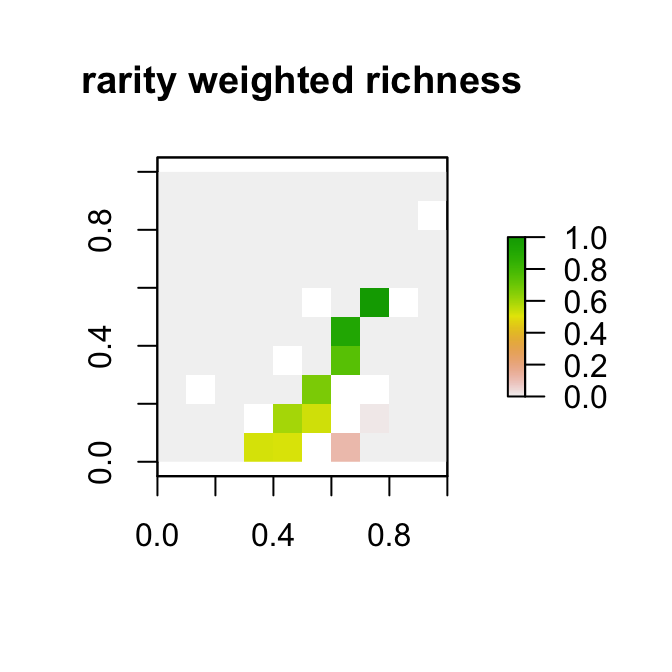

Chapter 4 01-Vignette
4.1 Summary
The prioritizr R package uses integer linear programming (ILP) techniques to provide a flexible interface for building and solving conservation planning problems (Rodrigues et al. 2000; Billionnet 2013). It supports a broad range of objectives, constraints, and penalties that can be used to custom-tailor conservation planning problems to the specific needs of a conservation planning exercise. Once built, conservation planning problems can be solved using a variety of commercial and open-source exact algorithm solvers. In contrast to the algorithms conventionally used to solve conservation problems, such as heuristics or simulated annealing (Ball et al. 2009), the exact algorithms used here are guaranteed to find optimal solutions. Furthermore, conservation problems can be constructed to optimize the spatial allocation of different management zone (or actions), meaning that conservation practitioners can identify solutions that benefit multiple stakeholders. Finally, this package has the functionality to read input data formatted for the Marxan conservation planning program (Ball et al. 2009), and find much cheaper solutions in a much shorter period of time than Marxan (Beyer et al. 2016).
4.2 Introduction
Systematic conservation planning is a rigorous, repeatable, and structured approach to designing new protected areas that efficiently meet conservation objectives (Margules & Pressey 2000). Historically, conservation decision-making has often evaluated parcels opportunistically as they became available for purchase, donation, or under threat. Although purchasing such areas may improve the status quo, such decisions may not substantially enhance the long-term persistence of target species or communities. Faced with this realization, conservation planners began using decision support tools to help simulate alternative reserve designs over a range of different biodiversity and management goals and, ultimately, guide protected area acquisitions and management actions. Due to the systematic, evidence-based nature of these tools, conservation prioritization can help contribute to a transparent, inclusive, and more defensible decision making process.
A conservation planning exercise typically starts by defining a study area. This study area should encompass all the areas relevant to the decision maker or the hypothesis being tested. The extent of a study area could encompass a few important localities (e.g. Stigner et al. 2016), a single state (e.g. Kirkpatrick 1983), an entire country (Fuller et al. 2010), or the entire planet (Butchart et al. 2015). Next, the study area is divided into a set of discrete areas termed planning units. Each planning unit represents a discrete locality in the study area that can be managed independently of other areas. The general idea is that some combination of the planning units can be selected for conservation actions (e.g. protected area establishment, habitat restoration). Planning units are often created as square or hexagon cells that are sized according to the scale of the conservation actions, and the resolution of the data that underpin the planning exercise (but see Klein et al. 2009).
Cost data (or a surrogate thereof) are needed to inform the prioritization process. Specifically, these cost data describe the relative expenditure associated with managing each planning unit for conservation. For example, if the goal of the conservation planning exercise is to identify priority areas for expanding a local protected area system, then the cost data could represent the physical cost of purchasing the land. Alternatively, if such data are not available, then surrogate data could are often used instead (e.g. human population density, opportunity cost of foregone commercial activities, or planning unit size).
Conservation planning exercises also require data on the biodiversity elements that are of conservation interest (termed conservation features). These features could be species (e.g. Neofelis nebulosa, the Clouded Leopard), populations, or habitats (e.g. mangroves or cloud forest). After identifying the set of relevant conservation features for a conservation planning exercise, spatially explicit data need to be obtained for each and every feature to describe their spatial distribution (e.g. habitat suitability data, probability of occurrence data, presence/absence data). This is important to ensure that conservation features are adequately covered (represented) by prioritizations. After assembling all the data, the next step is to define the conservation planning problem.
The prioritizr R package is designed to help you build and solve conservation planning problems. Specifically, prioritizations are generated by using formulating a mathematical optimization problem and then solving it to generate a solution. These mathematical optimization problems are formulated using the planning unit data, cost data, and feature data, and with information related to the overarching aim of the prioritization process. In general, the goal of an optimization problem is to minimize (or maximize) an objective function that is calculated using a set of decision variables, subject to a series of constraints to ensure that solution exhibits specific properties. The objective function describes the quantity which we are trying to minimize (e.g. cost of the solution) or maximize (e.g. number of features conserved). The decision variables describe the entities that we can control, and indicate which planning units are selected for conservation management and which of those are not. The constraints can be thought of as rules that the need decision variables need to follow. For example, a commonly used constraint is specifying that the solution must not exceed a certain budget.
A wide variety of approaches have been developed for solving optimization problems. Reserve design problems are frequently solved using simulated annealing (Kirkpatrick et al. 1983) or heuristics (Nicholls & Margules 1993; Moilanen 2007). These methods are conceptually simple and can be applied to a wide variety of optimization problems. However, they do not scale well for large or complex problems (Beyer et al. 2016). Additionally, these methods cannot tell you how close any given solution is to the optimal solution. The prioritizr R package uses exact algorithms to efficiently solve conservation planning problems to within a pre-specified a optimality gap. In other words, you can specify that you need the optimal solution (i.e. a gap of 0%) and the algorithms will, given enough time, find a solution that meets this criteria. In the past, exact algorithms have been too slow for conservation planning exercises (Pressey et al. 1996). However, improvements over the last decade mean that they are now much faster (Achterberg & Wunderling 2013; Beyer et al. 2016).
In this package, optimization problems are expressed using integer linear programming (ILP) so that they can be solved using (linear) exact algorithm solvers. The general form of an integer programming problem can be expressed in matrix notation using the following equation.
\[\text{Minimize} \space \boldsymbol{c}^\text{T} \boldsymbol{x} \space \space \text{subject to} \space A\boldsymbol{x} \space \Box \space \boldsymbol{b}\]
Here, where \(x\) is a vector of decision variables, \(c\) and \(b\) are vectors of known coefficients, and \(A\) is the constraint matrix. The final term specifies a series of structural constants and the \(\Box\) symbol is used to indicate that the relational operators for the constraints can be either \(\geq\), \(=\), or \(\leq\). In the context of a conservation planning problem, \(c\) could be used to represent the planning unit costs, \(A\) could be used to store the data showing the presence / absence (or amount) of each feature in each planning unit, \(b\) could be used to represent minimum amount of habitat required for each species in the solution, the \(\Box\) could be set to \(\geq\) symbols to indicate that the total amount of each feature in the solution must exceed the quantities in \(b\). But there are many other ways of formulating the reserve selection problem (Rodrigues et al. 2000).
4.3 Package overview
The prioritizr R package contains eight main types of functions. These functions are used to:
- create a new conservation planning problem by specifying the planning units, features, and management zones of conservation interest (e.g. species, ecosystems).
- add an objective to a conservation planning problem.
- add targets to a problem to specify how much of each feature is desired or required to be conserved in the solutions.
- add constraints to a conservation planning problem to ensure that solutions exhibit specific properties (e.g. select specific planning units for protection).
- add penalties to a problem to penalize solutions according to specific metric (e.g. connectivity).
- add decisions to a problem to specify the nature of the decisions in the problem.
- add methods to generate a portfolio of solutions.
- add a solver to a conservation problem to specify which software should be used to generate solutions and customize the optimization process.
- solve a conservation problem.
- evaluate a solution by computing summary statistics.
- evaluate the relative importance (irreplaceability) of planning units selected in a solution.
4.4 Package work flow
The general work flow when using the prioritizr R package starts with creating a new conservation planning problem object using data. Specifically, the problem object should be constructed using data that specify the planning units, biodiversity features, management zones (if applicable), and costs. After creating a new problem object, it can be customized—by adding objectives, penalties, constraints, and other information—to build a precise representation of the conservation planning problem required, and then solved to obtain a solutions.
All conservation planning problems require an objective. An objective specifies the property which is used to compare different feasible solutions. Simply put, the objective is the property of the solution which should be maximized or minimized during the optimization process. For instance, with the minimum set objective (specified using add_min_set_objective), we are seeking to minimize the cost of the solution (similar to Marxan). On the other hand, with the maximum coverage objective (specified using add_max_cover_objective), we are seeking to maximize the number of different features represented in the solution.
Many objectives require targets (e.g. the minimum set objective). Targets are a specialized set of constraints that relate to the total quantity of each feature secured in the solution (e.g. amount of suitable habitat or number of individuals). In the case of the minimum set objective ( add_min_set_objective), they are used to ensure that solutions secure a sufficient quantity of each feature, and in other objectives, such as the maximum features objective ( add_max_features_objective) they are used to assess whether a feature has been adequately conserved by a candidate solution. Targets can be expressed numerically as the total amount required for a given feature (using add_absolute_targets), or as a proportion of the total amount found in the planning units (using add_relative_targets). Note that not all objectives require targets, and a warning will be thrown if an attempt is made to add targets to a problem with an objective that does not use them.
Constraints and penalties can be added to a conservation planning problem to ensure that solutions exhibit a specific property or penalize solutions which don’t exhibit a specific property (respectively). The difference between constraints and penalties, strictly speaking, is constraints are used to rule out potential solutions that don’t exhibit a specific property. For instance, constraints can be used to ensure that specific planning units are selected in the solution for prioritization (using add_locked_in_constraints) or not selected in the solution for prioritization (using add_locked_out_constraints). On the other hand, penalties are combined with the objective of a problem, with a penalty factor, and the overall objective of the problem then becomes to minimize (or maximize) the primary objective function and the penalty function. For example, penalties can be added to a problem to penalize solutions that are excessively fragmented (using add_boundary_penalties). These penalties have a penalty argument that specifies the relative importance of having spatially clustered solutions. When the argument to penalty is high, then solutions which are less fragmented are valued more highly—even if they cost more—and when the argument to penalty is low, then the solutions which are more fragmented are valued less highly.
After building a conservation problem, it can then be solved to obtain a solution (or portfolio of solutions if desired). The solution is returned in the same format as the planning unit data used to construct the problem. This means that if raster or shapefile / vector data was used when initializing the problem, then the solution will also be in raster or shapefile / vector data. This can be very helpful when it comes to interpreting and visualizing solutions because it means that the solution data does not first have to be merged with spatial data before they can be plotted on a map.
4.5 Usage
Here we will provide an introduction to using the prioritizr R package to build and solve a conservation planning problem. Please note that we will not discuss conservation planning with multiple zones in this vignette, for more information on working with multiple management zones please see the zones vignette.
First, we will load the prioritizr package.
# load package
library(prioritizr)
# set default options for printing tabular data
options(tibble.width = Inf)4.5.1 Data
Now we will load some built-in data sets that are distributed with the prioritizr R package. This package contains several different planning unit data sets. To provide a comprehensive overview of the different ways that we can initialize a conservation planning problem, we will load each of them.
First, we will load the raster planning unit data (sim_pu_raster). Here, the planning units are represented as a raster (i.e. a RasterLayer object) and each pixel corresponds to the spatial extent of each panning unit. The pixel values correspond to the acquisition costs of each planning unit.
# load raster planning unit data
data(sim_pu_raster)
# print description of the data
print(sim_pu_raster)## class : RasterLayer
## dimensions : 10, 10, 100 (nrow, ncol, ncell)
## resolution : 0.1, 0.1 (x, y)
## extent : 0, 1, 0, 1 (xmin, xmax, ymin, ymax)
## crs : NA
## source : memory
## names : layer
## values : 190.1328, 215.8638 (min, max)# plot the data
plot(sim_pu_raster)
Secondly, we will load one of the spatial vector planning unit data sets (sim_pu_polygons). Here, each polygon (i.e. feature using ArcGIS terminology) corresponds to a different planning unit. This data set has an attribute table that contains additional information about each polygon. Namely, the cost field (column) in the attribute table contains the acquisition cost for each planning unit.
# load polygon planning unit data
data(sim_pu_polygons)
# print first six rows of attribute table
head(sim_pu_polygons@data)## cost locked_in locked_out
## 1 215.8638 FALSE FALSE
## 2 212.7823 FALSE FALSE
## 3 207.4962 FALSE FALSE
## 4 208.9322 FALSE TRUE
## 5 214.0419 FALSE FALSE
## 6 213.7636 FALSE FALSE# plot the planning units
spplot(sim_pu_polygons, zcol = "cost")
Thirdly, we will load some planning unit data stored in tabular format (i.e. data.frame format). For those familiar with Marxan or dealing with very large conservation planning problems (> 10 million planning units), it may be useful to work with data in this format because it does not contain any spatial information which will reduce computational burden. When using tabular data to initialize conservation planning problems, the data must follow the conventions used by Marxan. Specifically, each row in the planning unit table must correspond to a different planning unit. The table must also have an “id” column to provide a unique integer identifier for each planning unit, and it must also have a column that indicates the cost of each planning unit. For more information, please see the official Marxan documentation.
# specify file path for planning unit data
pu_path <- system.file("extdata/input/pu.dat", package = "prioritizr")
# load in the tabular planning unit data
# note that we use the data.table::fread function, as opposed to the read.csv
# function, because it is much faster
pu_dat <- data.table::fread(pu_path, data.table = FALSE)
# preview first six rows of the tabular planning unit data
# note that it has some extra columns other than id and cost as per the
# Marxan format
head(pu_dat)## id cost status xloc yloc
## 1 3 0.0 0 1116623 -4493479
## 2 30 752727.5 3 1110623 -4496943
## 3 56 3734907.5 0 1092623 -4500408
## 4 58 1695902.1 0 1116623 -4500408
## 5 84 3422025.6 0 1098623 -4503872
## 6 85 17890758.4 0 1110623 -4503872Finally, we will load data showing the spatial distribution of the conservation features. Our conservation features (sim_features) are represented as a stack of raster objects (i.e. a RasterStack object) where each layer corresponds to a different feature (e.g. a multi-band GeoTIFF where each band corresponds to a different feature). The pixel values in each layer correspond to the amount of suitable habitat available in a given planning unit. Note that our planning unit raster layer and our conservation feature stack have exactly the same spatial properties (i.e. resolution, extent, coordinate reference system) so their pixels line up perfectly.
# load feature data
data(sim_features)
# plot the distribution of suitable habitat for each feature
plot(sim_features, main = paste("Feature", seq_len(nlayers(sim_features))),
nr = 2, box = FALSE, axes = FALSE)
4.5.2 Initialize a problem
After having loaded our planning unit and feature data, we will now try initializing the some conservation planning problems. There are a lot of different ways to initialize a conservation planning problem, so here we will just showcase a few of the more commonly used methods. For an exhaustive description of all the ways you can initialize a conservation problem, see the help file for the problem function (which you can open using the code ?problem). First off, we will initialize a conservation planning problem using the raster data.
# create problem
p1 <- problem(sim_pu_raster, sim_features)
# print problem
print(p1)## Conservation Problem
## planning units: RasterLayer (90 units)
## cost: min: 190.13276, max: 215.86384
## features: layer.1, layer.2, layer.3, ... (5 features)
## objective: none
## targets: none
## decisions: default
## constraints: <none>
## penalties: <none>
## portfolio: default
## solver: default# print number of planning units
number_of_planning_units(p1)## [1] 90# print number of features
number_of_features(p1)## [1] 5Generally, we recommend initializing problems using raster data where possible. This is because the problem function needs to calculate the amount of each feature in each planning unit, and by providing both the planning unit and feature data in raster format with the same spatial resolution, extents, and coordinate systems, this means that the problem function does not need to do any geo-processing behind the scenes. But sometimes we can’t use raster planning unit data because our planning units aren’t equal-sized grid cells. So, below is an example showing how we can initialize a conservation planning problem using planning units that are formatted as spatial vector data. Note that if we had pre-computed the amount of each feature in each planning unit and stored the data in the attribute table, we could pass in the names of the columns as an argument to the problem function.
# create problem with spatial vector data
# note that we have to specify which column in the attribute table contains
# the cost data
p2 <- problem(sim_pu_polygons, sim_features, cost_column = "cost")
# print problem
print(p2)## Conservation Problem
## planning units: SpatialPolygonsDataFrame (90 units)
## cost: min: 190.13276, max: 215.86384
## features: layer.1, layer.2, layer.3, ... (5 features)
## objective: none
## targets: none
## decisions: default
## constraints: <none>
## penalties: <none>
## portfolio: default
## solver: defaultWe can also initialize a conservation planning problem using tabular planning unit data (i.e. a data.frame). Since the tabular planning unit data does not contain any spatial information, we also have to provide the feature data in tabular format (i.e. a data.frame) and data showing the amount of each feature in each planning unit in tabular format (i.e. a data.frame). The feature data must have an “id” column containing a unique integer identifier for each feature, and the planning unit by feature data must contain the following three columns: “pu” corresponding to the planning unit identifiers, “species” corresponding to the feature identifiers, and “amount” showing the amount of a given feature in a given planning unit.
# set file path for feature data
spec_path <- system.file("extdata/input/spec.dat", package = "prioritizr")
# load in feature data
spec_dat <- data.table::fread(spec_path, data.table = FALSE)
# print first six rows of the data
# note that it contains extra columns
head(spec_dat)## id prop spf name
## 1 10 0.3 1 bird1
## 2 11 0.3 1 nvis2
## 3 12 0.3 1 nvis8
## 4 13 0.3 1 nvis9
## 5 14 0.3 1 nvis14
## 6 15 0.3 1 nvis20# set file path for planning unit vs. feature data
puvspr_path <- system.file("extdata/input/puvspr.dat", package = "prioritizr")
# load in planning unit vs feature data
puvspr_dat <- data.table::fread(puvspr_path, data.table = FALSE)
# print first six rows of the data
head(puvspr_dat)## species pu amount
## 1 26 56 1203448.84
## 2 26 58 451670.10
## 3 26 84 680473.75
## 4 26 85 97356.24
## 5 26 86 78034.76
## 6 26 111 4783274.17# create problem
p3 <- problem(pu_dat, spec_dat, cost_column = "cost", rij = puvspr_dat)
# print problem
print(p3)## Conservation Problem
## planning units: data.frame (1751 units)
## cost: min: 0, max: 41569219.38232
## features: bird1, nvis2, nvis8, ... (17 features)
## objective: none
## targets: none
## decisions: default
## constraints: <none>
## penalties: <none>
## portfolio: default
## solver: defaultFor more information on initializing problems, please see the help page for the problem function (which you can open using the code ?problem). Now that we have initialized a conservation planning problem, we will show you how you can customize it to suit the exact needs of your conservation planning scenario. Although we initialized the conservation planning problems using several different methods, moving forward, we will only use raster-based planning unit data to keep things simple.
4.5.3 Add an objective
The next step is to add an objective to the problem. A problem objective is used to specify the primary goal of the problem (i.e. the quantity that is to be maximized or minimized). All conservation planning problems involve minimizing or maximizing some kind of objective. For instance, we might require a solution that conserves enough habitat for each species while minimizing the overall cost of the reserve network. Alternatively, we might require a solution that maximizes the number of conserved species while ensuring that the cost of the reserve network does not exceed the budget. Please note that objectives are added in the same way regardless of the type of data used to initialize the problem.
The prioritizr R package supports a variety of different objective functions.
- Minimum set objective: Minimize the cost of the solution whilst ensuring that all targets are met (Rodrigues et al. 2000). This objective is similar to that used in Marxan (Ball et al. 2009). For example, we can add a minimum set objective to a problem using the following code.
# create a new problem that has the minimum set objective
p3 <- problem(sim_pu_raster, sim_features) %>%
add_min_set_objective()
# print the problem
print(p3)## Conservation Problem
## planning units: RasterLayer (90 units)
## cost: min: 190.13276, max: 215.86384
## features: layer.1, layer.2, layer.3, ... (5 features)
## objective: Minimum set objective
## targets: none
## decisions: default
## constraints: <none>
## penalties: <none>
## portfolio: default
## solver: default- Maximum cover objective: Represent at least one instance of as many features as possible within a given budget (Church et al. 1996).
# create a new problem that has the maximum coverage objective and a budget
# of 5000
p4 <- problem(sim_pu_raster, sim_features) %>%
add_max_cover_objective(5000)
# print the problem
print(p4)## Conservation Problem
## planning units: RasterLayer (90 units)
## cost: min: 190.13276, max: 215.86384
## features: layer.1, layer.2, layer.3, ... (5 features)
## objective: Maximum coverage objective [budget (5000)]
## targets: none
## decisions: default
## constraints: <none>
## penalties: <none>
## portfolio: default
## solver: default- Maximum features objective: Fulfill as many targets as possible while ensuring that the cost of the solution does not exceed a budget (inspired by Cabeza & Moilanen 2001). This object is similar to the maximum cover objective except that we have the option of later specifying targets for each feature. In practice, this objective is more useful than the maximum cover objective because features often require a certain amount of area for them to persist and simply capturing a single instance of habitat for each feature is generally unlikely to enhance their long-term persistence.
# create a new problem that has the maximum features objective and a budget
# of 5000
p5 <- problem(sim_pu_raster, sim_features) %>%
add_max_features_objective(budget = 5000)
# print the problem
print(p5)## Conservation Problem
## planning units: RasterLayer (90 units)
## cost: min: 190.13276, max: 215.86384
## features: layer.1, layer.2, layer.3, ... (5 features)
## objective: Maximum representation objective [budget (5000)]
## targets: none
## decisions: default
## constraints: <none>
## penalties: <none>
## portfolio: default
## solver: default- Minimum shortfall objective: Minimize the shortfall for as many targets as possible while ensuring that the cost of the solution does not exceed a budget. In practice, this objective useful when there is a large amount of left-over budget when using the maximum feature representation objective and the remaining funds need to be allocated to places that will enhance the representation of features with unmet targets.
# create a new problem that has the minimum shortfall objective and a budget
# of 5000
p6 <- problem(sim_pu_raster, sim_features) %>%
add_min_shortfall_objective(budget = 5000)
# print the problem
print(p6)## Conservation Problem
## planning units: RasterLayer (90 units)
## cost: min: 190.13276, max: 215.86384
## features: layer.1, layer.2, layer.3, ... (5 features)
## objective: Minimum shortfall objective [budget (5000)]
## targets: none
## decisions: default
## constraints: <none>
## penalties: <none>
## portfolio: default
## solver: default- Maximum phylogenetic diversity objective: Maximize the phylogenetic diversity of the features represented in the solution subject to a budget (inspired by Faith 1992; Rodrigues & Gaston 2002). This objective is similar to the maximum features objective except that emphasis is placed on protecting features which are associated with a diverse range of evolutionary histories. The prioritizr R package contains a simulated phylogeny that can be used with the simulated feature data (
sim_phylogny).
# load simulated phylogeny data
data(sim_phylogeny)
# create a new problem that has the maximum phylogenetic diversity
# objective and a budget of 5000
p7 <- problem(sim_pu_raster, sim_features) %>%
add_max_phylo_div_objective(budget = 5000, tree = sim_phylogeny)
# print the problem
print(p7)## Conservation Problem
## planning units: RasterLayer (90 units)
## cost: min: 190.13276, max: 215.86384
## features: layer.1, layer.2, layer.3, ... (5 features)
## objective: Phylogenetic diversity objective [budget (5000)]
## targets: none
## decisions: default
## constraints: <none>
## penalties: <none>
## portfolio: default
## solver: default- Maximum phylogenetic endemism objective: Maximize the phylogenetic endemism of the features represented in the solution subject to a budget (inspired by Faith 1992; Rodrigues & Gaston 2002; Rosauer et al. 2009). This objective is similar to the maximum phylogenetic diversity except that emphasis is placed conserving features that are associated with geographically restricted periods of evolutionary history rather than a diverse range of evolutionary histories.
# load simulated phylogeny data
data(sim_phylogeny)
# create a new problem that has the maximum phylogenetic diversity
# objective and a budget of 5000
p8 <- problem(sim_pu_raster, sim_features) %>%
add_max_phylo_end_objective(budget = 5000, tree = sim_phylogeny)
# print the problem
print(p8)## Conservation Problem
## planning units: RasterLayer (90 units)
## cost: min: 190.13276, max: 215.86384
## features: layer.1, layer.2, layer.3, ... (5 features)
## objective: Phylogenetic endemism objective [budget (5000)]
## targets: none
## decisions: default
## constraints: <none>
## penalties: <none>
## portfolio: default
## solver: default- Maximum utility objective: Secure as much of the features as possible without exceeding a budget. This objective is functionally equivalent to selecting the planning units with the greatest amounts of each feature (e.g. species richness). Generally, we don’t encourage the use of this objective because it will only rarely identify complementary solutions—solutions which adequately conserve a range of different features—except perhaps to explore trade-offs or provide a baseline solution with which to compare other solutions.
# create a new problem that has the maximum utility objective and a budget
# of 5000
p9 <- problem(sim_pu_raster, sim_features) %>%
add_max_utility_objective(budget = 5000)
# print the problem
print(p9)## Conservation Problem
## planning units: RasterLayer (90 units)
## cost: min: 190.13276, max: 215.86384
## features: layer.1, layer.2, layer.3, ... (5 features)
## objective: Maximum utility objective [budget (5000)]
## targets: none
## decisions: default
## constraints: <none>
## penalties: <none>
## portfolio: default
## solver: default4.5.4 Add targets
Most conservation planning problems require targets. Targets are used to specify the minimum amount or proportion of a feature’s distribution that needs to be protected in the solution. For example, we may want to develop a reserve network that will secure 20% of the distribution for each feature for minimal cost.
There are four ways for specifying targets in the prioritizr R package:
- Absolute targets: Targets are expressed as the total amount of each feature in the study area that need to be secured. For example, if we had binary feature data that showed the absence or presence of suitable habitat across the study area, we could set an absolute target as 5 to mean that we require 5 planning units with suitable habitat in the solution.
# create a problem with targets which specify that the solution must conserve
# a need a sum total of 3 units of suitable habitat for each feature
p10 <- problem(sim_pu_raster, sim_features) %>%
add_min_set_objective() %>%
add_absolute_targets(3)
# print problem
print(p10)## Conservation Problem
## planning units: RasterLayer (90 units)
## cost: min: 190.13276, max: 215.86384
## features: layer.1, layer.2, layer.3, ... (5 features)
## objective: Minimum set objective
## targets: Absolute targets [targets (min: 3, max: 3)]
## decisions: default
## constraints: <none>
## penalties: <none>
## portfolio: default
## solver: default- Relative targets: Targets are set as a proportion (between 0 and 1) of the total amount of each feature in the study area. For example, if we had binary feature data and the feature occupied a total of 20 planning units in the study area, we could set a relative target of 50 % to specify that the solution must secure 10 planning units for the feature. We could alternatively specify an absolute target of 10 to achieve the same result, but sometimes proportions are easier to work with.
# create a problem with the minimum set objective and relative targets of 10 %
# for each feature
p11 <- problem(sim_pu_raster, sim_features) %>%
add_min_set_objective() %>%
add_relative_targets(0.1)
# print problem
print(p11)## Conservation Problem
## planning units: RasterLayer (90 units)
## cost: min: 190.13276, max: 215.86384
## features: layer.1, layer.2, layer.3, ... (5 features)
## objective: Minimum set objective
## targets: Relative targets [targets (min: 0.1, max: 0.1)]
## decisions: default
## constraints: <none>
## penalties: <none>
## portfolio: default
## solver: default# create a problem with targets which specify that we need 10 % of the habitat
# for the first feature, 15 % for the second feature, 20 % for the third feature
# 25 % for the fourth feature and 30 % of the habitat for the fifth feature
targets <- c(0.1, 0.15, 0.2, 0.25, 0.3)
p12 <- problem(sim_pu_raster, sim_features) %>%
add_min_set_objective() %>%
add_relative_targets(targets)
# print problem
print(p12)## Conservation Problem
## planning units: RasterLayer (90 units)
## cost: min: 190.13276, max: 215.86384
## features: layer.1, layer.2, layer.3, ... (5 features)
## objective: Minimum set objective
## targets: Relative targets [targets (min: 0.1, max: 0.3)]
## decisions: default
## constraints: <none>
## penalties: <none>
## portfolio: default
## solver: default- Log-linear targets: Targets are expressed using scaling factors and log-linear interpolation. This method for specifying targets is commonly used for global prioritization analyses (Rodrigues et al. 2004).
# create problem with added log-linear targets
p13 <- problem(sim_pu_raster, sim_features) %>%
add_min_set_objective() %>%
add_loglinear_targets(10, 0.9, 100, 0.2)
# print problem
print(p13)## Conservation Problem
## planning units: RasterLayer (90 units)
## cost: min: 190.13276, max: 215.86384
## features: layer.1, layer.2, layer.3, ... (5 features)
## objective: Minimum set objective
## targets: Absolute targets [targets (min: 17.290505409161, max: 21.5906174426385)]
## decisions: default
## constraints: <none>
## penalties: <none>
## portfolio: default
## solver: default- Manual targets: Targets are manually specified. This is only really recommended for advanced users or problems that involve multiple management zones. See the zones vignette for more information on these targets.
As with the functions for specifying the objective of a problem, if we try adding multiple targets to a problem, only the most recently added set of targets are used.
4.5.5 Add constraints
A constraint can be added to a conservation planning problem to ensure that all solutions exhibit a specific property. For example, they can be used to make sure that all solutions select a specific planning unit or that all selected planning units in the solution follow a certain configuration.
The following constraints can be added to conservation planning problems in the prioritizr R package.
- Locked in constraints: Add constraints to ensure that certain planning units are prioritized in the solution. For example, it may be desirable to lock in planning units that are inside existing protected areas so that the solution fills in the gaps in the existing reserve network.
# create problem with constraints which specify that the first planning unit
# must be selected in the solution
p14 <- problem(sim_pu_raster, sim_features) %>%
add_min_set_objective() %>%
add_relative_targets(0.1) %>%
add_locked_in_constraints(1)
# print problem
print(p14)## Conservation Problem
## planning units: RasterLayer (90 units)
## cost: min: 190.13276, max: 215.86384
## features: layer.1, layer.2, layer.3, ... (5 features)
## objective: Minimum set objective
## targets: Relative targets [targets (min: 0.1, max: 0.1)]
## decisions: default
## constraints: <Locked in planning units [1 locked units]>
## penalties: <none>
## portfolio: default
## solver: default- Locked out constraints: Add constraints to ensure that certain planning units are not prioritized in the solution. For example, it may be useful to lock out planning units that have been degraded and are not suitable for conserving species.
# create problem with constraints which specify that the second planning unit
# must not be selected in the solution
p15 <- problem(sim_pu_raster, sim_features) %>%
add_min_set_objective() %>%
add_relative_targets(0.1) %>%
add_locked_out_constraints(2)
# print problem
print(p15)## Conservation Problem
## planning units: RasterLayer (90 units)
## cost: min: 190.13276, max: 215.86384
## features: layer.1, layer.2, layer.3, ... (5 features)
## objective: Minimum set objective
## targets: Relative targets [targets (min: 0.1, max: 0.1)]
## decisions: default
## constraints: <Locked out planning units [1 locked units]>
## penalties: <none>
## portfolio: default
## solver: default- Neighbor constraints: Add constraints to a conservation problem to ensure that all selected planning units have at least a certain number of neighbors.
# create problem with constraints which specify that all selected planning units
# in the solution must have at least 1 neighbor
p16 <- problem(sim_pu_raster, sim_features) %>%
add_min_set_objective() %>%
add_relative_targets(0.1) %>%
add_neighbor_constraints(1)
# print problem
print(p16)## Conservation Problem
## planning units: RasterLayer (90 units)
## cost: min: 190.13276, max: 215.86384
## features: layer.1, layer.2, layer.3, ... (5 features)
## objective: Minimum set objective
## targets: Relative targets [targets (min: 0.1, max: 0.1)]
## decisions: default
## constraints: <Neighbor constraint [number of neighbors (1), zones]>
## penalties: <none>
## portfolio: default
## solver: default- Contiguity constraints: Add constraints to a conservation problem to ensure that all selected planning units are spatially connected to each other and form spatially contiguous unit.
# create problem with constraints which specify that all selected planning units
# in the solution must form a single contiguous unit
p17 <- problem(sim_pu_raster, sim_features) %>%
add_min_set_objective() %>%
add_relative_targets(0.1) %>%
add_contiguity_constraints()
# print problem
print(p17)## Conservation Problem
## planning units: RasterLayer (90 units)
## cost: min: 190.13276, max: 215.86384
## features: layer.1, layer.2, layer.3, ... (5 features)
## objective: Minimum set objective
## targets: Relative targets [targets (min: 0.1, max: 0.1)]
## decisions: default
## constraints: <Contiguity constraints [apply constraints? (1), zones]>
## penalties: <none>
## portfolio: default
## solver: default- Feature contiguity constraints: Add constraints to ensure that each feature is represented in a contiguous unit of dispersible habitat. These constraints are a more advanced version of those implemented in the
add_contiguity_constraintsfunction, because they ensure that each feature is represented in a contiguous unit and not that the entire solution should form a contiguous unit.
# create problem with constraints which specify that the planning units used
# to conserve each feature must form a contiguous unit
p18 <- problem(sim_pu_raster, sim_features) %>%
add_min_set_objective() %>%
add_relative_targets(0.1) %>%
add_feature_contiguity_constraints()
# print problem
print(p18)## Conservation Problem
## planning units: RasterLayer (90 units)
## cost: min: 190.13276, max: 215.86384
## features: layer.1, layer.2, layer.3, ... (5 features)
## objective: Minimum set objective
## targets: Relative targets [targets (min: 0.1, max: 0.1)]
## decisions: default
## constraints: <Feature contiguity constraints [apply constraints? (1), layer.1 zones, layer.2 zones, layer.3 zones, layer.4 zones, layer.5 zones]>
## penalties: <none>
## portfolio: default
## solver: default- Mandatory allocation constraints: Add constraints to ensure that every planning unit is allocated to a management zone in the solution. Please note that this function can only be used with problems that contain multiple zones. For more information on problems with multiple zones and an example using this function, see the Management Zones vignette.
In particular, The add_locked_in_constraints and add_locked_out_constraints functions are incredibly useful for real-world conservation planning exercises, so it’s worth pointing out that there are several ways we can specify which planning units should be locked in or out of the solutions. If we use raster planning unit data, we can also use raster data to specify which planning units should be locked in our locked out.
# load data to lock in or lock out planning units
data(sim_locked_in_raster)
data(sim_locked_out_raster)
# plot the locked data
plot(stack(sim_locked_in_raster, sim_locked_out_raster),
main = c("Locked In", "Locked Out"))
# create a problem using raster planning unit data and use the locked raster
# data to lock in some planning units and lock out some other planning units
p19 <- problem(sim_pu_raster, sim_features) %>%
add_min_set_objective() %>%
add_relative_targets(0.1) %>%
add_locked_in_constraints(sim_locked_in_raster) %>%
add_locked_out_constraints(sim_locked_out_raster)
# print problem
print(p19)## Conservation Problem
## planning units: RasterLayer (90 units)
## cost: min: 190.13276, max: 215.86384
## features: layer.1, layer.2, layer.3, ... (5 features)
## objective: Minimum set objective
## targets: Relative targets [targets (min: 0.1, max: 0.1)]
## decisions: default
## constraints: <Locked in planning units [10 locked units]
## Locked out planning units [10 locked units]>
## penalties: <none>
## portfolio: default
## solver: defaultIf our planning unit data are in a spatial vector format (similar to the sim_pu_polygons data) or a tabular format (similar to pu_dat), we can use the field names in the data to refer to which planning units should be locked in and / or out. For example, the sim_pu_polygons object has TRUE / FALSE values in the “locked_in” field which indicate which planning units should be selected in the solution. We could use the data in this field to specify that those planning units with TRUE values should be locked in using the following methods.
# preview first six rows of the attribute table for sim_pu_polygons
head(sim_pu_polygons@data)## cost locked_in locked_out
## 1 215.8638 FALSE FALSE
## 2 212.7823 FALSE FALSE
## 3 207.4962 FALSE FALSE
## 4 208.9322 FALSE TRUE
## 5 214.0419 FALSE FALSE
## 6 213.7636 FALSE FALSE# specify locked in data using the field name
p20 <- problem(sim_pu_polygons, sim_features, cost_column = "cost") %>%
add_min_set_objective() %>%
add_relative_targets(0.1) %>%
add_locked_in_constraints("locked_in")
# print problem
print(p20)## Conservation Problem
## planning units: SpatialPolygonsDataFrame (90 units)
## cost: min: 190.13276, max: 215.86384
## features: layer.1, layer.2, layer.3, ... (5 features)
## objective: Minimum set objective
## targets: Relative targets [targets (min: 0.1, max: 0.1)]
## decisions: default
## constraints: <Locked in planning units [10 locked units]>
## penalties: <none>
## portfolio: default
## solver: default# specify locked in data using the values in the field
p21 <- problem(sim_pu_polygons, sim_features, cost_column = "cost") %>%
add_min_set_objective() %>%
add_relative_targets(0.1) %>%
add_locked_in_constraints(which(sim_pu_polygons$locked_in))
# print problem
print(p21)## Conservation Problem
## planning units: SpatialPolygonsDataFrame (90 units)
## cost: min: 190.13276, max: 215.86384
## features: layer.1, layer.2, layer.3, ... (5 features)
## objective: Minimum set objective
## targets: Relative targets [targets (min: 0.1, max: 0.1)]
## decisions: default
## constraints: <Locked in planning units [10 locked units]>
## penalties: <none>
## portfolio: default
## solver: default4.5.6 Add penalties
We can also add penalties to a problem to favor or penalize solutions according to a secondary objective. Unlike the constraint functions, these functions will add extra information to the objective function of the optimization function to penalize solutions that do not exhibit specific characteristics. For example, penalties can be added to a problem to avoid highly fragmented solutions at the expense of accepting slightly more expensive solutions. All penalty functions have a penalty argument that controls the relative importance of the secondary penalty function compared to the primary objective function. It is worth noting that incredibly low or incredibly high penalty values—relative to the main objective function—can cause problems to take a very long time to solve, so when trying out a range of different penalty values it can be helpful to limit the solver to run for a set period of time.
The prioritizr R package currently offers only two methods for adding penalties to a conservation planning problem.
- Boundary penalties: Add penalties to penalize solutions that are excessively fragmented. These penalties are similar to those used in Marxan (Ball et al. 2009; Beyer et al. 2016).
# create problem with penalties that penalize fragmented solutions with a
# penalty factor of 0.01
p22 <- problem(sim_pu_raster, sim_features) %>%
add_min_set_objective() %>%
add_relative_targets(0.1) %>%
add_boundary_penalties(penalty = 0.01)
# print problem
print(p22)## Conservation Problem
## planning units: RasterLayer (90 units)
## cost: min: 190.13276, max: 215.86384
## features: layer.1, layer.2, layer.3, ... (5 features)
## objective: Minimum set objective
## targets: Relative targets [targets (min: 0.1, max: 0.1)]
## decisions: default
## constraints: <none>
## penalties: <Boundary penalties [edge factor (min: 0.5, max: 0.5), penalty (0.01), zones]>
## portfolio: default
## solver: default- Connectivity penalties: Add penalties to favor solutions that select combinations of planning units with high connectivity between them. These penalties are similar to those used in Marxan with Zones (Watts et al. 2009; Beyer et al. 2016). This function supports both symmetric and asymmetric connectivities among planning units.
# create problem with penalties that favor combinations of planning units with
# high connectivity, here we will use only the first four layers in
# sim_features for the features and we will use the fifth layer in sim_features
# to represent the connectivity data, where the connectivity_matrix function
# will create a matrix showing the average strength of connectivity between
# adjacent planning units using the data in the fifth layer of sim_features
p23 <- problem(sim_pu_raster, sim_features[[1:4]]) %>%
add_min_set_objective() %>%
add_relative_targets(0.1) %>%
add_boundary_penalties(penalty = 5,
data = connectivity_matrix(sim_pu_raster,
sim_features[[5]]))
# print problem
print(p23)## Conservation Problem
## planning units: RasterLayer (90 units)
## cost: min: 190.13276, max: 215.86384
## features: layer.1, layer.2, layer.3, layer.4 (4 features)
## objective: Minimum set objective
## targets: Relative targets [targets (min: 0.1, max: 0.1)]
## decisions: default
## constraints: <none>
## penalties: <Boundary penalties [edge factor (min: 0.5, max: 0.5), penalty (5), zones]>
## portfolio: default
## solver: default- Linear penalties: Add penalties to penalize solutions that select planning units according to a certain variable (e.g. anthropogenic pressure).
# create data for penalizing planning units
pen_raster <- simulate_cost(sim_pu_raster)
# create problem with penalties that penalize solutions that select
# planning units with high values in the pen_raster object,
# here we will use a penalty value of 5 to indicate the trade-off (scaling)
# between the penalty values (in the sim_pu_raster) and the main objective
# (i.e. the cost of the solution)
p24 <- problem(sim_pu_raster, sim_features) %>%
add_min_set_objective() %>%
add_relative_targets(0.1) %>%
add_linear_penalties(penalty = 5, data = pen_raster)
# print problem
print(p24)## Conservation Problem
## planning units: RasterLayer (90 units)
## cost: min: 190.13276, max: 215.86384
## features: layer.1, layer.2, layer.3, ... (5 features)
## objective: Minimum set objective
## targets: Relative targets [targets (min: 0.1, max: 0.1)]
## decisions: default
## constraints: <none>
## penalties: <Linear penalties [penalty (5)]>
## portfolio: default
## solver: default4.5.7 Add the decision types
Conservation planning problems involve making decisions on how planning units will be managed. These decisions are then associated with management actions (e.g. turning a planning unit into a protected area). The type of decision describes how the action is applied to planning units. For instance, the default decision-type is a binary decision type, meaning that we are either selecting or not selecting planning units for management.
The prioritizr R package currently offers the following types of decisions for customizing problems.
- Binary decisions: Add a binary decision to a conservation planning problem. This is the classic decision of either prioritizing or not prioritizing a planning unit. Typically, this decision has the assumed action of buying the planning unit to include in a protected area network. If no decision is added to a problem object, then this decision class will be used by default.
# add binary decisions to a problem
p25 <- problem(sim_pu_raster, sim_features) %>%
add_min_set_objective() %>%
add_relative_targets(0.1) %>%
add_binary_decisions()
# print problem
print(p25)## Conservation Problem
## planning units: RasterLayer (90 units)
## cost: min: 190.13276, max: 215.86384
## features: layer.1, layer.2, layer.3, ... (5 features)
## objective: Minimum set objective
## targets: Relative targets [targets (min: 0.1, max: 0.1)]
## decisions: Binary decision
## constraints: <none>
## penalties: <none>
## portfolio: default
## solver: default- Proportion decisions: Add a proportion decision to a problem. This is a relaxed decision where a part of a planning unit can be prioritized, as opposed to the default of the entire planning unit. Typically, this decision has the assumed action of buying a fraction of a planning unit to include in a protected area network. Generally, problems can be solved much faster with proportion-type decisions than binary-type decisions, so they can be very useful when commercial solvers are not available.
# add proportion decisions to a problem
p26 <- problem(sim_pu_raster, sim_features) %>%
add_min_set_objective() %>%
add_relative_targets(0.1) %>%
add_proportion_decisions()
# print problem
print(p26)## Conservation Problem
## planning units: RasterLayer (90 units)
## cost: min: 190.13276, max: 215.86384
## features: layer.1, layer.2, layer.3, ... (5 features)
## objective: Minimum set objective
## targets: Relative targets [targets (min: 0.1, max: 0.1)]
## decisions: Proportion decision
## constraints: <none>
## penalties: <none>
## portfolio: default
## solver: default- Semi-continuous decisions: Add a semi-continuous decision to a problem. This decision is similar to proportion decisions except that it has an upper bound parameter. By default, the decision can range from prioritizing none (0%) to all (100%) of a planning unit. However, a upper bound can be specified to ensure that at most only a fraction (e.g. 80%) of a planning unit can be purchased. This type of decision may be useful when it is not practical to conserve the entire area indicated by a planning unit.
# add semi-continuous decisions to a problem, where we can only manage at most
# 50 % of the area encompassed by a planning unit
p27 <- problem(sim_pu_raster, sim_features) %>%
add_min_set_objective() %>%
add_relative_targets(0.1) %>%
add_semicontinuous_decisions(0.5)
# print problem
print(p27)## Conservation Problem
## planning units: RasterLayer (90 units)
## cost: min: 190.13276, max: 215.86384
## features: layer.1, layer.2, layer.3, ... (5 features)
## objective: Minimum set objective
## targets: Relative targets [targets (min: 0.1, max: 0.1)]
## decisions: Semicontinuous decision [upper limit (0.5)]
## constraints: <none>
## penalties: <none>
## portfolio: default
## solver: default4.5.8 Add a solver
Next, after specifying the mathematical formulation that underpins your conservation planning problem, you can specify how the problem should be solved. If you do not specify this information, the prioritizr R package will automatically use the best solver currently installed on your system with some reasonable defaults. We strongly recommend installing the Gurobi software suite and the gurobi R package to solve problems, and for more information on this topic please refer to the Gurobi Installation Guide.
Currently, the prioritizr R package only supports three different solvers.
- Gurobi solver: Gurobi is a state of the art commercial optimization software. It is by far the fastest of the solvers that can be used to solve conservation problems. However, it is not freely available. That said, special licenses are available to academics at no cost.
# create a problem and specify that Gurobi should be used to solve the problem
# and specify an optimality gap of zero to obtain the optimal solution
p28 <- problem(sim_pu_raster, sim_features) %>%
add_min_set_objective() %>%
add_relative_targets(0.1) %>%
add_binary_decisions() %>%
add_gurobi_solver(gap = 0)
# print problem
print(p28)## Conservation Problem
## planning units: RasterLayer (90 units)
## cost: min: 190.13276, max: 215.86384
## features: layer.1, layer.2, layer.3, ... (5 features)
## objective: Minimum set objective
## targets: Relative targets [targets (min: 0.1, max: 0.1)]
## decisions: Binary decision
## constraints: <none>
## penalties: <none>
## portfolio: default
## solver: Gurobi [first_feasible (0), gap (0), numeric_focus (0), presolve (2), threads (1), time_limit (2147483647), verbose (1)]- IBM CPLEX solver: IBM CPLEX is a commercial optimization software. It is faster than the open source solvers available for generating prioritizations (see below), however, it is not freely available. Similar to the Gurobi software, special licenses are available to academics at no cost.
# create a problem and specify that IBM CPLEX should be used to solve the
# problem and specify an optimality gap of zero to obtain the optimal solution
# p29 <- problem(sim_pu_raster, sim_features) %>%
# add_min_set_objective() %>%
# add_relative_targets(0.1) %>%
# add_binary_decisions() %>%
# add_cplex_solver(gap = 0)
#
# # print problem
# print(p29)- Rsymphony solver: SYMPHONY is an open-source integer programming solver that is part of the Computational Infrastructure for Operations Research (COIN-OR) project, an initiative to promote development of open-source tools for operations research. The Rsymphony R package provides an interface to COIN-OR and is available on The Comprehensive R Archive Network (CRAN).
# create a problem and specify that Rsymphony should be used to solve the
# problem and specify an optimality gap of zero to obtain the optimal solution
# p30 <- problem(sim_pu_raster, sim_features) %>%
# add_min_set_objective() %>%
# add_relative_targets(0.1) %>%
# add_binary_decisions() %>%
# add_rsymphony_solver(gap = 0)
#
# # print problem
# print(p30)- lpsymphony solver: The lpsymphony R package provides a different interface to the COIN-OR software suite. This package may be easier to install on Windows and Mac OSX operating systems than the Rsymphony R package. Unlike the Rsymphony R package, the lpsymphony R package is distributed through Bioconductor.
# create a problem and specify that lpsymphony should be used to solve the
# problem and specify an optimality gap of zero to obtain the optimal solution
# p31 <- problem(sim_pu_raster, sim_features) %>%
# add_min_set_objective() %>%
# add_relative_targets(0.1) %>%
# add_binary_decisions() %>%
# add_lpsymphony_solver(gap = 0)
#
# # print problem
# print(p31)4.5.9 Add a portfolio
Many conservation planning exercises require a portfolio of solutions. For example, real-world exercises can involve presenting decision makers with a range of near-optimal decisions. Additionally, the number of times that different planning units are selected in different solutions can provide insight into their relative importance.
The following methods are available for generating a portfolio of solutions.
- Extra portfolio: Generate a portfolio of solutions by storing feasible solutions found during the optimization process. Note that this method requires that the Gurobi optimization software is used to generate solutions.
# create a problem and specify that a portfolio should be created using
# extra solutions found while solving the problem
# p32 <- problem(sim_pu_raster, sim_features) %>%
# add_min_set_objective() %>%
# add_relative_targets(0.1) %>%
# add_binary_decisions() %>%
# add_extra_portfolio()
#
# # print problem
# print(p32)- Top portfolio: Generate a portfolio of solutions by finding a pre-specified number of solutions that are closest to optimality (i.e the top solutions). Note that this method requires that the Gurobi optimization software is used to generate solutions.
# create a problem and specify that a portfolio should be created using
# the top five solutions
# p33 <- problem(sim_pu_raster, sim_features) %>%
# add_min_set_objective() %>%
# add_relative_targets(0.1) %>%
# add_binary_decisions() %>%
# add_top_portfolio(number_solutions = 5)
#
# # print problem
# print(p33)- Gap portfolio: Generate a portfolio of solutions by finding a certain number of solutions that are all within a pre-specified optimality gap. This method is especially useful for generating multiple solutions that can used be to calculate selection frequencies (similar to Marxan). Note that this method requires that the Gurobi optimization software is used to generate solutions.
# create a problem and specify that a portfolio should be created by
# finding five solutions within 10% of optimality
# p34 <- problem(sim_pu_raster, sim_features) %>%
# add_min_set_objective() %>%
# add_relative_targets(0.1) %>%
# add_binary_decisions() %>%
# add_gap_portfolio(number_solutions = 5, pool_gap = 0.2)
#
# # print problem
# print(p34)- Cuts portfolio: Generate a portfolio of distinct solutions within a pre-specified optimality gap. This method is only recommended if the Gurobi optimization solver is not available.
# create a problem and specify that a portfolio containing 10 solutions
# should be created using using Bender's cuts
# p35 <- problem(sim_pu_raster, sim_features) %>%
# add_min_set_objective() %>%
# add_relative_targets(0.1) %>%
# add_binary_decisions() %>%
# add_cuts_portfolio(number_solutions = 10)
#
# # print problem
# print(p35)- Shuffle portfolio: Generate a portfolio of solutions by randomly reordering the data prior to attempting to solve the problem. If the Gurobi optimization solver is not available, this method is the fastest method for generating a set number of solutions within a specified distance from optimality.
# create a problem and specify a portfolio should be created that contains
# 10 solutions and that any duplicate solutions should not be removed
# p36 <- problem(sim_pu_raster, sim_features) %>%
# add_min_set_objective() %>%
# add_relative_targets(0.1) %>%
# add_binary_decisions() %>%
# add_shuffle_portfolio(number_solutions = 10, remove_duplicates = FALSE)
#
# # print problem
# print(p36)4.5.10 Solve the problem
Finally, after formulating our conservation planning problem and specifying how the problem should be solved, we can use the solve function to obtain a solution. Note that the solver will typically print out some information describing the size of the problem and report its progress when searching for a suitable solution.
# formulate the problem
p37 <- problem(sim_pu_raster, sim_features) %>%
add_min_set_objective() %>%
add_relative_targets(0.1) %>%
add_boundary_penalties(penalty = 500, edge_factor = 0.5) %>%
add_binary_decisions()
# solve the problem (using the default solver)
s37 <- solve(p37)## Gurobi Optimizer version 9.1.1 build v9.1.1rc0 (mac64)
## Thread count: 4 physical cores, 8 logical processors, using up to 1 threads
## Optimize a model with 293 rows, 234 columns and 1026 nonzeros
## Model fingerprint: 0xbd38144b
## Variable types: 0 continuous, 234 integer (234 binary)
## Coefficient statistics:
## Matrix range [2e-01, 1e+00]
## Objective range [1e+02, 4e+02]
## Bounds range [1e+00, 1e+00]
## RHS range [3e+00, 8e+00]
## Found heuristic solution: objective 20287.196992
## Found heuristic solution: objective 3087.9617505
## Presolve time: 0.00s
## Presolved: 293 rows, 234 columns, 1026 nonzeros
## Variable types: 0 continuous, 234 integer (234 binary)
## Presolved: 293 rows, 234 columns, 1026 nonzeros
##
##
## Root relaxation: objective 2.265862e+03, 218 iterations, 0.00 seconds
##
## Nodes | Current Node | Objective Bounds | Work
## Expl Unexpl | Obj Depth IntInf | Incumbent BestBd Gap | It/Node Time
##
## 0 0 2265.86242 0 234 3087.96175 2265.86242 26.6% - 0s
## H 0 0 2920.9854189 2265.86242 22.4% - 0s
## 0 0 2327.26806 0 232 2920.98542 2327.26806 20.3% - 0s
## 0 0 2368.37316 0 226 2920.98542 2368.37316 18.9% - 0s
## 0 0 2376.91951 0 223 2920.98542 2376.91951 18.6% - 0s
## 0 0 2376.91951 0 223 2920.98542 2376.91951 18.6% - 0s
## H 0 0 2910.0202492 2376.91951 18.3% - 0s
## H 0 0 2676.6543486 2376.91951 11.2% - 0s
## 0 2 2377.44918 0 223 2676.65435 2377.44918 11.2% - 0s
## H 27 27 2676.6537993 2377.44918 11.2% 16.9 0s
## H 56 40 2676.6531808 2388.87827 10.8% 16.2 0s
##
## Cutting planes:
## Gomory: 3
##
## Explored 57 nodes (1397 simplex iterations) in 0.15 seconds
## Thread count was 1 (of 8 available processors)
##
## Solution count 5: 2676.65 2910.02 2920.99 ... 20287.2
##
## Optimal solution found (tolerance 1.00e-01)
## Best objective 2.676653180861e+03, best bound 2.413625263266e+03, gap 9.8267%# plot solution
plot(s37, col = c("grey90", "darkgreen"), main = "Solution",
xlim = c(-0.1, 1.1), ylim = c(-0.1, 1.1))
We can plot this solution because the planning unit input data are spatially referenced in a raster format. The output format will always match the planning unit data used to initialize the problem. For example, the solution to a problem with planning units in a spatial vector (shapefile) format would also be in a spatial vector format. Similarly, if the planning units were in a tabular format (i.e. data.frame), the solution would also be returned in a tabular format.
We can also extract attributes from the solution that describe the quality of the solution and the optimization process.
# extract the objective (numerical value being minimized or maximized)
print(attr(p37, "objective"))## NULL# extract time spent solving solution
print(attr(p37, "runtime"))## NULL# extract state message from the solver that describes why this specific
# solution was returned
print(attr(p37, "status"))## NULL4.5.11 Marxan problems
Although users are encouraged to build and tailor conservation planning problems to suit their own needs using the problem function, sometimes it just simply easier to use a more familiar formulation. The marxan_problem function is provided as a convenient wrapper for building and solving Marxan-style conservation problems. If users already have their conservation planning data formatted for use with Marxan, this function can also read Marxan data files and solve the Marxan-style problems using exact algorithm solvers. Please note that problems built using the marxan_problem function are still solved the same way as a problem initialized using the problem function, and therefore still require the installation of one of the solver packages.
Here is a short example showing how the marxan_problem function can be used to read Marxan input files and the solve function can be used to solve the problem.
# set file path for Marxan input file
minput <- system.file("extdata/input.dat", package = "prioritizr")
# read Marxan input file
mp <- marxan_problem(minput)
# print problem
print(mp)## Conservation Problem
## planning units: data.frame (1751 units)
## cost: min: 0, max: 41569219.38232
## features: bird1, nvis2, nvis8, ... (17 features)
## objective: Minimum set objective
## targets: Relative targets [targets (min: 0.3, max: 0.3)]
## decisions: default
## constraints: <Locked out planning units [1 locked units]
## Locked in planning units [317 locked units]>
## penalties: <Boundary penalties [edge factor (min: 1, max: 1), penalty (1), zones]>
## portfolio: default
## solver: default# solve the problem
ms <- solve(mp)
# since the Marxan data was in a tabular format, the solution is also returned
# in a tabular format, so we will print the first six rows of the table
# containing the solution
head(ms)Alternatively, rather then using a Marxan input file to construct the problem, we can manually read in the Marxan data files and input these to the marxan_problem function.
# load data
pu <- system.file("extdata/input/pu.dat", package = "prioritizr") %>%
read.table(sep = ",", header = TRUE)
features <- system.file("extdata/input/spec.dat", package = "prioritizr") %>%
read.table(sep = ",", header = TRUE)
bound <- system.file("extdata/input/bound.dat", package = "prioritizr") %>%
read.table(sep = "\t", header = TRUE)
rij <- system.file("extdata/input/puvspr.dat", package = "prioritizr") %>%
read.table(sep = ",", header = TRUE)
# build Marxan problem using data.frame objects
mp2 <- marxan_problem(x = pu, spec = features, puvspr = rij, bound = bound,
blm = 0)
# print problem
print(mp2)## Conservation Problem
## planning units: data.frame (1751 units)
## cost: min: 0, max: 41569219.38232
## features: bird1, nvis2, nvis8, ... (17 features)
## objective: Minimum set objective
## targets: Relative targets [targets (min: 0.3, max: 0.3)]
## decisions: default
## constraints: <Locked in planning units [317 locked units]
## Locked out planning units [1 locked units]>
## penalties: <Boundary penalties [edge factor (min: 1, max: 1), penalty (0), zones]>
## portfolio: default
## solver: default4.5.12 Evaluate the performance of a solution
After obtaining a solution to a conservation planning problem, it can be useful to calculate various summary statistics to understand its performance. The following functions are available to summarize a solution:
- Calculate the number of planning units selected within a solution.
# calculate statistic
eval_n_summary(p37, s37)## # A tibble: 1 x 2
## summary cost
## <chr> <dbl>
## 1 overall 10- Calculate the total cost of a solution.
# calculate statistic
eval_cost_summary(p37, s37)## # A tibble: 1 x 2
## summary cost
## <chr> <dbl>
## 1 overall 2002.- Calculate how well features are represented by a solution. This function can be used for problems that are built using targets and those that are not built using targets.
# calculate statistics
eval_feature_representation_summary(p37, s37)## # A tibble: 5 x 5
## summary feature total_amount absolute_held relative_held
## <chr> <chr> <dbl> <dbl> <dbl>
## 1 overall layer.1 83.3 8.96 0.108
## 2 overall layer.2 31.2 3.19 0.102
## 3 overall layer.3 72.0 7.56 0.105
## 4 overall layer.4 42.7 4.32 0.101
## 5 overall layer.5 56.7 5.93 0.105- Calculate how well feature representation targets are met by a solution. This function can only be used with problems contain targets.
# calculate statistics
eval_target_coverage_summary(p37, s37)## # A tibble: 5 x 9
## feature met total_amount absolute_target absolute_held absolute_shortfall relative_target relative_held
## <chr> <lgl> <dbl> <dbl> <dbl> <dbl> <dbl> <dbl>
## 1 layer.1 TRUE 83.3 8.33 8.96 0 0.1 0.108
## 2 layer.2 TRUE 31.2 3.12 3.19 0 0.1 0.102
## 3 layer.3 TRUE 72.0 7.20 7.56 0 0.1 0.105
## 4 layer.4 TRUE 42.7 4.27 4.32 0 0.1 0.101
## 5 layer.5 TRUE 56.7 5.67 5.93 0 0.1 0.105
## relative_shortfall
## <dbl>
## 1 0
## 2 0
## 3 0
## 4 0
## 5 0- Calculate the exposed boundary length (perimeter) associated with a solution.
# calculate statistic
eval_boundary_summary(p37, s37)## # A tibble: 1 x 2
## summary boundary
## <chr> <dbl>
## 1 overall 1.35- Calculate the connectivity held within a solution.
# calculate statistic
# here we use the raster data for the first feature as an example
# to parametrize pair-wise connectivity between different planning units
eval_connectivity_summary(
p37, s37, data = connectivity_matrix(sim_pu_raster, sim_features[[1]]))## # A tibble: 1 x 2
## summary connectivity
## <chr> <dbl>
## 1 overall 1.804.5.13 Importance (irreplaceability)
Conservation plans can take a long time to implement. Since funding availability and habitat quality can decline over time, it is critical that the most important places in a prioritization are scheduled for protection as early as possible. For instance, some planning units in a solution might contain many rare species which do not occur in any other planning units. Alternatively, some planning units might offer an especially high return on investment that reduces costs considerably. As a consequence, conservation planners often need information on which planning units selected in a prioritization are most important to the overall success of the prioritization. To achieve this, conservation planners can use importance (irreplaceability) scores for each planning unit selected in a solution.
The prioritizr R package offers multiple methods for assessing importance. These includes scores calculated based on replacement costs [eval_replacement_importance(); Cabeza & Moilanen (2006)], Ferrier et al. (2000) (eval_ferrier_importance()), and rarity weighted richness scores [eval_rare_richness_importance(); Williams et al. (1996)]. The replacement cost scores quantify the change in the objective function (e.g. additional costs required to meet feature targets) of the optimal solution if a given planning unit in a solution cannot be acquired. They can (i) account for the cost of different planning units, (ii) account for multiple management zones, (iii) apply to any objective function, and (iv) identify truly irreplaceable planning units (denoted with infinite values). The Ferrier scores quantify the importance of planning units for meeting feature targets. They can only be applied to conservation problems with a minimum set objective and a single zone (i.e. the classic Marxan-type problem). Furthermore—unlike the replacement cost scores—the Ferrier scores provide a score for each feature within each planning unit, providing insight into why certain planning units are more important than other planning units. The rarity weighted richness scores are simply a measure of biological diversity. They do not account for planning costs, multiple management zones, objective functions, or feature targets (or weightings). They merely describe the spatial patterns of biodiversity, and do not account for many of the factors needed to quantify the importance of a planning unit for achieving conservation goals.
We recommend using replacement cost scores for small and moderate sized problems (e.g. less than 30,000 planning units) when it is feasible to do so. It can take a very long time to compute replacement cost scores, and so it is simply not feasible to compute these scores for particularly large problems. For moderate and large sized problems (e.g. more than 30,000 planning units), we recommend using the rarity weighted richness scores. Beware, it has been known for decades that such static measures of biodiversity lead to poor conservation plans (Kirkpatrick 1983). Although the Ferrier method is also provided, we do not recommend using this method until it has been verified by a statistical expert.
Below we will generate a solution, and then calculate importance scores for the planning units selected in the solution using the three different methods.
# formulate the problem
p38 <- problem(sim_pu_raster, sim_features) %>%
add_min_set_objective() %>%
add_relative_targets(0.1) %>%
add_binary_decisions()
# solve the problem
s38 <- solve(p38)## Gurobi Optimizer version 9.1.1 build v9.1.1rc0 (mac64)
## Thread count: 4 physical cores, 8 logical processors, using up to 1 threads
## Optimize a model with 5 rows, 90 columns and 450 nonzeros
## Model fingerprint: 0x6442bf6e
## Variable types: 0 continuous, 90 integer (90 binary)
## Coefficient statistics:
## Matrix range [2e-01, 9e-01]
## Objective range [2e+02, 2e+02]
## Bounds range [1e+00, 1e+00]
## RHS range [3e+00, 8e+00]
## Found heuristic solution: objective 2337.9617505
## Presolve time: 0.00s
## Presolved: 5 rows, 90 columns, 450 nonzeros
## Variable types: 0 continuous, 90 integer (90 binary)
## Presolved: 5 rows, 90 columns, 450 nonzeros
##
##
## Root relaxation: objective 1.931582e+03, 12 iterations, 0.00 seconds
##
## Nodes | Current Node | Objective Bounds | Work
## Expl Unexpl | Obj Depth IntInf | Incumbent BestBd Gap | It/Node Time
##
## 0 0 1931.58191 0 4 2337.96175 1931.58191 17.4% - 0s
## H 0 0 1987.3985265 1931.58191 2.81% - 0s
##
## Explored 1 nodes (12 simplex iterations) in 0.00 seconds
## Thread count was 1 (of 8 available processors)
##
## Solution count 2: 1987.4 2337.96
##
## Optimal solution found (tolerance 1.00e-01)
## Best objective 1.987398526526e+03, best bound 1.931581908865e+03, gap 2.8085%# plot solution
plot(s38, col = c("grey90", "darkgreen"), main = "Solution",
xlim = c(-0.1, 1.1), ylim = c(-0.1, 1.1))
# calculate replacement cost scores and make the solver quiet
rc38 <- p38 %>%
add_default_solver(gap = 0, verbose = FALSE) %>%
eval_replacement_importance(s38)
# plot replacement cost scores
plot(rc38, main = "replacement cost")
# calculate Ferrier scores and extract total score
fs38 <- eval_ferrier_importance(p38, s38)[["total"]]
# plot Ferrier scores
plot(fs38, main = "Ferrier scores")
# calculate rarity weighted richness scores
rwr38 <- eval_rare_richness_importance(p38, s38)
# plot replacement cost scores
plot(rwr38, main = "rarity weighted richness")
Although rarity weighted richness scores can approximate scores derived from the other two methods in certain conservation planning exercises, we can see that the rarity weighted richness scores provide completely different results in this case.
4.6 Conclusion
Hopefully, this vignette has provided an informative introduction to the prioritizr R package. For more worked examples using the prioritizr R package, check out the Tasmania and Salt Spring Island vignettes. Perhaps, one of the best ways to learn a new piece of software is to just try it out. Test it, try breaking it, make mistakes, and learn from them. We would recommend trying to build conservation planning problems that resemble those you face in your own work—but using the built-in example data sets. This way you can quickly verify that the problems you build actually mean what you think they mean. For instance, you can try playing around with the targets and see what effect they have on the solutions, or try playing around with penalties and see what effect they have on the solutions.
Finally, if you have any questions about using the prioritizr R package or suggestions for improving the prioritizr R package (perhaps addressing some spelling mistakes found whilst reading this vignette?), please file an issue on the package’s online coding repository (https://github.com/prioritizr/prioritizr/issues).